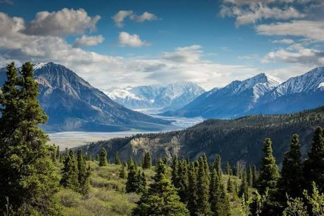
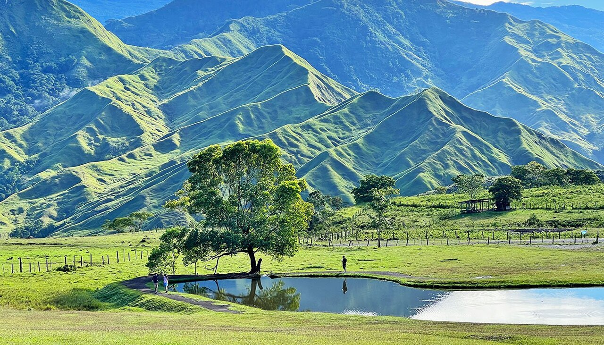

Impasug-ong
WELCOME TO THE HIGHLANDS OF MINDANAO
Experience the breathtaking landscapes, beautiful waterfalls, exciting adventures, and rich culture of Bukidnon, Philippines.
EXPLORE BUKIDNONEXPLORE NORTHERN MINDANAO
Bukidnon is a beautiful province in Northern Mindanao known for its cool climate, magnificent mountain ranges, green landscapes, waterfalls, lakes, and rich cultural heritage.
From the famous Communal Ranch to the peaceful waters of Lake Apo, every destination offers a unique experience for travelers, families, and adventure lovers.
DISCOVER MORE →
PLACE TO EXPLORE
Explore the beautiful destinations that make Bukidnon a wonderful place to visit.
